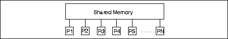
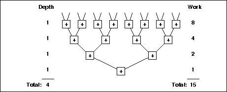
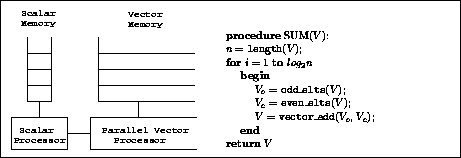
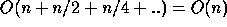

Analyzing performance is a key part of studying algorithms. Although such analysis is not used to predict the exact running time of an algorithm on a particular machine, it is important in determining how the running time grows as a function of the input size. To analyze performance a formal model is needed to account for the costs. In parallel computing the most common models are based on a set of processors connected either by a shared memory, as in the Parallel Random Access Machines (PRAM, see Figure 1), or through a network, as with the hypercube or grid models. In such processor-based models, performance is calculated in terms of the number of instruction cycles a computation takes (its running time) and is usually expressed as a function of input size and number of processors.

An important advance in parallel computing was the introduction of the notion of virtual models. A virtual model is a performance model that does not attempt to represent any machine that we would actually build, but rather is a higher-level model that can then be mapped onto various real machines. For example, the PRAM is often viewed as a virtual model [25]. From this viewpoint, it is agreed that a PRAM cannot be built directly since in practice it is unreasonable to assume that every processor can access a shared memory in unit time. Instead, the PRAM is treated as a virtual machine that can be mapped onto more realistic machines efficiently by simulating multiple processors of the PRAM on a single processor of a host machine. This simulation imposes some slowdown K, but requires K fewer processors, so the total cost (processor-time product) remains the same. The advantage of virtual models over physical machine models is that they can be easier to program.

Virtual models can be taken a step further and used to define performance in more abstract measures than just running time on a particular machine. A pair of such measures are work and depth: work is defined as the total number of operations executed by a computation, and depth is defined as the longest chain of sequential dependencies in the computation. Consider, for example, summing 16 numbers using a balanced binary tree (see Figure 2). The work required by this computation is 15 operations (the 15 additions). The depth of the computation is 4 operations since the longest chain of dependencies is the depth of the summation tree--the sums need to be calculated starting at the leaves and going down one level at a time. In general summing n numbers on a balanced tree requires n-1 work and log2 n depth. Work is usually viewed as a measure of the total cost of a computation (integral of needed resources over time), and also specifies the running time if the algorithm is executed on a sequential processor. The depth represents the best possible running time, assuming an ideal machine with an unlimited number of processors.
Work and depth have been used informally for many years to describe the performance of parallel algorithms [23], especially when teaching them [17, 16]. The claim is that it is easier to describe, think about, and analyze algorithms in terms of work and depth rather than in terms of running time on a processor-based model (a model based on P processors). Furthermore, work and depth together tell us a lot about expected performance on various machines. We will return to these points, but we first describe in more detail how work and depth can be incorporated into a computational model. There are basically three classes of such models--circuit models, vector machine models, and language-based models--and we briefly describe each.
In circuit models an algorithm is specified by designing a circuit of logic gates to solve the problem. The circuits are restricted to have no cycles. For example we could view Figure 2 as a circuit in which the inputs are at the top, each + is an adder circuit, and each of the lines between adders is a bundle of wires. The final sum is returned at the bottom. In circuit models the circuit size (number of gates) corresponds to work, and the longest path from an input to an output corresponds to depth. Although for a particular input size one could build a circuit to implement an algorithm, in general circuit models are viewed as virtual models from which the size and depth of the designs tell us something about the performance of algorithms on real machines. As such, the models have been used for many years to study various theoretical aspects of parallelism, for example to prove that certain problems are hard to solve in parallel (see [17] for an overview). Although the models are well suited for such theoretical analysis, they are not a convenient model for programming parallel algorithms.


and the depth is a constant times the number of iterations, which is O(log n).The first programmable machine model based on work and depth was the Vector Random Access Machine (VRAM) [4]. The VRAM model is a sequential random-access machine (RAM) extended with a set of instructions that operate on vectors (see Figure 3). Each location of the memory contains a whole vector, and the vectors can vary in size during the computation. The vector instructions include element-wise operations, such as adding the corresponding elements of two vectors, and aggregate operations, such as extracting elements from one vector based on another vector of indices. The depth of a computation in a VRAM is simply the number of instructions executed by the machine, and the work is calculated by summing the lengths of the vectors on which the computation operates. As an example, Figure 3 shows VRAM code for taking the sum of n values. This code executes the summation tree in Figure 2--each loop iteration moves down the tree one level. The VRAM is again a virtual model since it would be impractical to build the vector memory because of its dynamic nature. Although the VRAM is a good model for describing many algorithms that use vectors or arrays, it is not an ideal model for directly expressing algorithms on more complicated data structures, such as trees or graphs.
A third choice for defining a model in terms of work and depth is to define it directly in terms of language constructs. Such a language-based performance model specifies the costs of the primitive instructions, and a set of rules for composing costs across program expressions. The use of language-based models is certainly not new. Aho and Ullman, in their popular introductory text book ``Foundations of Computer Science'' [2], define such a model for deriving running times of sequential algorithms. The approach allows them to discuss the running time of the algorithms without introducing a machine model. A similar approach can be taken to define a model based on work and depth. In this approach work and depth costs are assigned to each primitive instruction of a language and rules are specified for combining both parallel and sequential expressions. Roughly speaking, when executing a set of tasks in parallel the total work is the sum of the work of the tasks and the total depth is the maximum of the depth of the tasks. When executing tasks sequentially, both the work and depth are summed. These rules are made more concrete when we describe NESL's performance model in Section 2.2, and the algorithms in the article illustrate many examples of how the rules can be applied.
We note that language-based performance models seem to be significantly more important for parallel algorithms than for sequential algorithms. Unlike Aho and Ullman's sequential model which corresponds almost directly to a machine model (the Random Access Machine) and is defined purely for convenience, there seems to be no satisfactory machine model that captures the notion of work and depth in a general way.